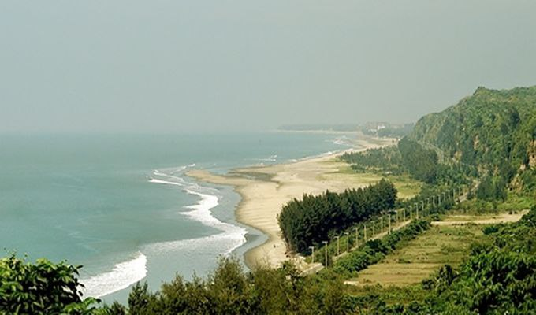
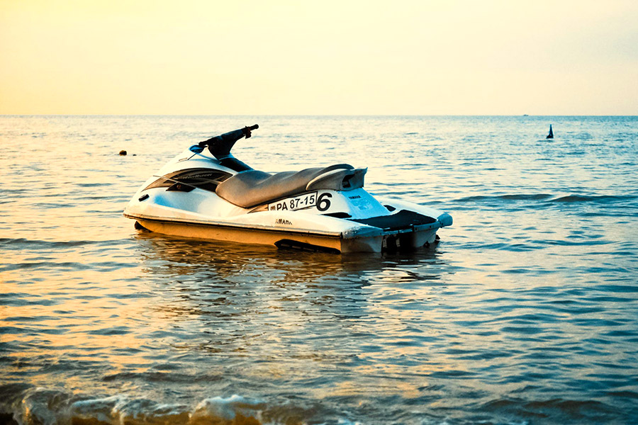
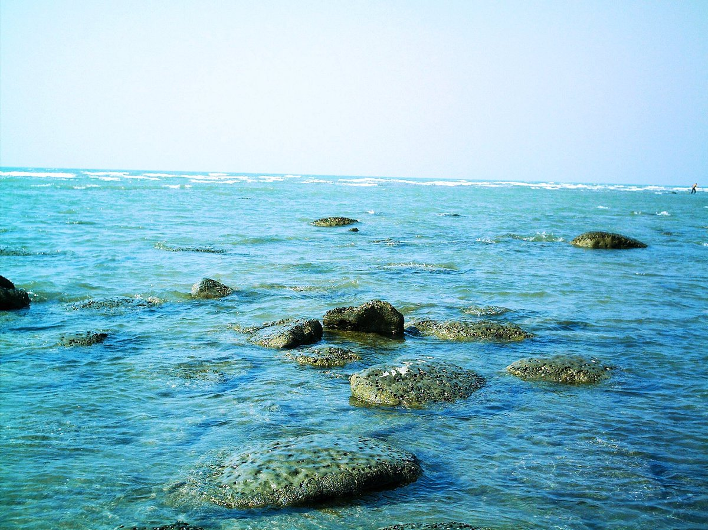

About Cox's Bazar
Cox's Bazar is a popular tourist destination located in Bangladesh. It is known for its long sandy beach, which stretches over 120 kilometers.
Popular Tours
-

Himchori
Explore the stunning natural beauty of Cox's Bazar with our guided tour. Visit the famous Himchari National Park and enjoy breathtaking views.
-

Jett skiing
Experience the thrill of water sports in Cox's Bazar. Enjoy activities like jet skiing, parasailing, and banana boat rides.
-

Inani-beach
Inani Beach is a sea beach about 20 Km from the Cox's Bazar. One has to go to the beach through the beautiful marine drive road.